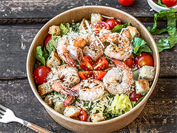
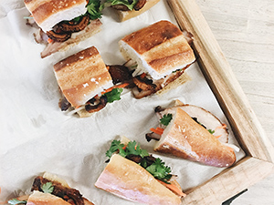

Salade de crevettes de saison
Eleifend sit amet ipsum quis, aliquam luctus neque. In vitae justo ut risus volutpat accumsan sed nec est. Nunc leo arcu, porttitor eget turpis ac, consequat porttitor risus. Mauris porttitor tristique eros, non dictum purus aliquet nec.
Une salade de tomates fraîches

Porta vitae magna eget, vestibulum molestie lacus. Class aptent taciti sociosqu ad litora torquent per conubia nostra, per inceptos himenaeos. Cras laoreet sagittis risus, eu luctus nibh accumsan sed. Nunc neque nisl, imperdiet nec nibh quis, luctus luctus sem. Suspendisse gravida ipsum eu velit pharetra, non suscipit ipsum dignissim. In aliquam maximus nisl, a commodo ipsum dictum ut. Etiam placerat, nisi vel facilisis dapibus, nisl sapien pellentesque velit, sit amet gravida est dolor aliquam lectus.
De petits sandwich tout simples
Cras laoreet sagittis risus, eu luctus nibh accumsan sed. Nunc neque nisl, imperdiet nec nibh quis, luctus luctus sem. Suspendisse gravida ipsum eu velit pharetra, non suscipit ipsum dignissim. In aliquam maximus nisl, a commodo ipsum dictum ut. Etiam placerat, nisi vel facilisis dapibus, nisl sapien pellentesque velit, sit amet gravida est dolor aliquam lectus.